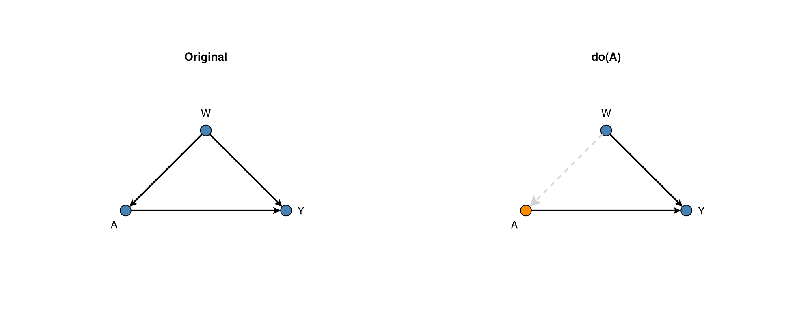

Choosing a diagram
This page maps common biological study designs and causal questions to the right diagram type and DAGMakie helper. DAGMakie is visualisation-only: it draws causal diagrams and highlights paths or adjustment sets that you supply (or compute via CausalDynamics.jl or CausalInference.jl).
Where this package fits
| Task | Typical question | Package |
|---|---|---|
| Draw assumptions | How do I communicate my causal assumptions clearly to colleagues and reviewers? | DAGMakie.jl (this package) |
| Identify & simulate | Which covariates must I adjust for (or exclude)? | CausalDynamics.jl |
| Estimate effects | What is the causal effect of shifting an exposure or treatment? | CausalTargeted.jl |
| Decompose pathways | How much of an effect acts directly versus through an intermediate mechanism? | CausalMediation.jl |
Reading a causal diagram
In a directed acyclic graph (DAG), nodes represent variables (observed or unmeasured) and directed arrows ($A \to Y$) represent direct causal influences (Pearl, 2009; Hernán & Robins, 2020). What is missing from a DAG is as important as what is drawn: omitting an arrow asserts that one variable does not directly cause another.
DAGMakie encodes node and edge roles consistently so readers can scan a figure without decoding ad-hoc colours (Textor et al., 2016; Cinelli, Forney & Pearl, 2024):
- Solid nodes represent observed variables; dashed or hollow nodes represent latent (unmeasured) variables.
- Solid arrows ($\to$) represent causal effects; inhibitory terminals ($-\!\vert$) represent declared negative effects (
edge_weights). - Dashed bidirected arcs ($\leftrightarrow$) represent an unmeasured common cause of two variables (
MixedGraph). - Role colouring (
color_by) distinguishes exposure, outcome, confounders, mediators, and adjustment sets.
Match your biological question to a diagram
| Study design or biological question | Diagram type | Entry point in DAGMakie | Guide / reference |
|---|---|---|---|
| Three-variable building blocks (confounder, mediator, collider, chain) | Canonical motif DAG | dagplot_confounding, dagplot_mediation, dagplot_fork, dagplot_chain, dagplot_collider | Pearl (2009); Cinelli, Forney & Pearl (2024). Getting Started |
| Show which covariates to adjust for (and which backdoor paths are blocked) | Highlighted backdoor / adjustment DAG | dagplot_backdoor, dagplot_adjustment, dagplot_smart | Textor et al. (2016). Causal Analysis |
| Unmeasured confounding (e.g. unmeasured genetics or habitat quality affecting both $A$ and $Y$) | Mixed graph with bidirected arc ($\leftrightarrow$), frontdoor, IV, or M-bias | MixedGraph, dagplot_confounded, dagplot_frontdoor, dagplot_iv_confounded, dagplot_m_bias | Pearl (2009). Bidirected Edges |
| Repeated measurements, cohorts, or ecological time series | Time-indexed unrolled DAG (variables on rows, time on columns) | dagplot_temporal, dagplot_time_indexed | Hernán & Robins (2020). Skeletons & Time |
| Feedback loops or reciprocal physiology (e.g. host–parasite or endocrine feedback) | Cyclic graph (SCC-aware layout) or time-unrolled DAG | dagplot on a cyclic DiGraph, or dagplot_temporal | Basic Plotting |
Experimental manipulation or do(·) intervention | Graph surgery (removing incoming arrows to the intervened node) | dagplot_do, dagplot_do_comparison, do_surgery | Pearl (2009). Interventions |
| Effect modification / interaction or difference-in-differences (DiD) | Interaction DAG (IDAG) or Single-World Intervention Graph (SWIG) | modifier_edge, dagplot_did_swig, dagplot_side_by_side | Richardson & Robins (2013). Visual Grammar |
| Discovery output (undirected skeleton / CPDAG) | Skeleton with undirected and directed edges | dagplot_skeleton | Skeletons & Time |
| Quantitative path diagram (showing estimated effects or structural coefficients on arrows) | Edge-labelled DAG | elabels + structural_edge_labels or edge_coefficient_labels | Getting Started |
Minimal example: good control vs interventional surgery
A common biological pattern is baseline confounding ($W$ = age/season affecting parasite load $A$ and survival $Y$). Drawing the observational DAG alongside the do(A) surgery graph makes clear why an observational analysis must adjust for $W$ whereas a randomised experiment breaks $W \to A$:
using DAGMakie, CairoMakie
g, _ = confounding_graph(["W", "A", "Y"])
fig = dagplot_do_comparison(
g, 2;
labels = ["W", "A", "Y"],
titles = ("Observational (adjust W)", "Experimental do(A)"),
)
fig
References
- Cinelli, C., Forney, A., & Pearl, J. (2024). A crash course in good and bad controls. Sociological Methods & Research, 53(3), 1071–1104. doi:10.1177/00491241221099552
- Hernán, M. A., & Robins, J. M. (2020). Causal Inference: What If. Chapman & Hall/CRC.
- Pearl, J. (2009). Causality: Models, Reasoning, and Inference (2nd ed.). Cambridge University Press.
- Richardson, T. S., & Robins, J. M. (2013). Single world intervention graphs (SWIGs): A unification of the counterfactual and graphical approaches to causality. arXiv:1201.5658
- Textor, J., van der Zander, B., Gilthorpe, M. S., Liśkiewicz, M., & Ellison, G. T. H. (2016). Robust causal inference using directed acyclic graphs: the R package 'dagitty'. International Journal of Epidemiology, 45(6), 1887–1894. doi:10.1093/ije/dyw341
Next steps
- Executable motif and styling examples: Getting Started.
- Role colouring and adjustment highlighting: Causal Analysis.
- Time-indexed grids and interval glyphs: Skeletons & Time.
- Visual grammar for interactions and DiD SWIGs: Visual Grammar.